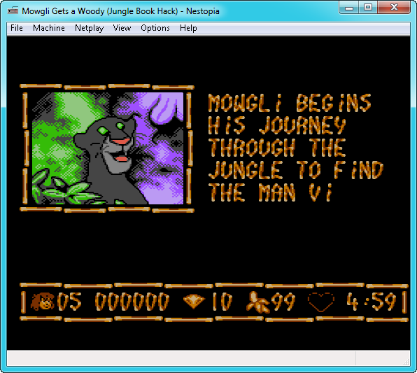

Nestopia — эмулятор Dendy
Во второй половине восьмидесятых и начале девяностых годов прошлого века были популярны восьмибитовые приставки Nintendo Entertainment System. Один из ее клонов продавался в России и прочих республиках постсоветского пространства под брендом Dendy. Те, кто в то время уже играл в видеоигры, могут даже припомнить запоминающийся слоган, сопровождавший рекламу Dendy на телевидении, — «Денди», «Денди», мы все любим «Денди»! В Денди играют все!». По правде сказать, играли в «Денди» не все, а только те, кому выпало счастье получить такой подарок. Остальные же довольствовались игрой в гостях, брали приставку на время у друзей или платили деньги за кратковременный сеанс игры в салонах видеоигр.  В процессе эмуляции игры с картриджа можно сохранять снимки экрана особо интересных или важных моментов геймплея. Скриншоты сохраняются в формат PNG. Nestopia дает возможность очень просто переназначать функциональные клавиши. Кроме того, это приложение хранит профили различных контроллеров и вариантов назначенных активных клавиш, используемых в играх. Старые игры имели весьма примитивную графику — по меркам современного пользователя. Однако простой вид еще не говорит о том, что проходить видеоигры было намного проще, чем современные шутеры, стратегии, аркады и т.д. Недостаток графики во многих ретроиграх компенсировал сложный геймплей. Только самые «матерые» игроки могли с первого раза пройти все уровни Darkwing Duck и показать класс на обманчиво простой Space Invaders. Во времена первых видеоигр (особенно аркадных) разработчики часто ставили ловушки, которые было трудно пройти и из-за которых суммарное время прохождения сюжета игр многократно увеличивалось. В эмуляторе Nestopia имеется возможность, которая очень пригодилась бы в таких тупиковых ситуациях. Приложение дает возможность записывать прохождение видеоигры в отдельный файл.